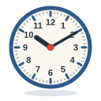
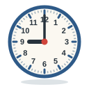
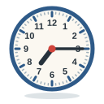

Unit 9
時間Time & Dates
而家幾點呀？ 三點半, 星期六, 五月三號, 聽日: telling the time, days and dates, and saying when.
 Learn
Learn
Time and dates
點 and 半, 個字 and 分, 星期, 月 and 號, 琴日 and 聽日, and time before the verb.

GameClock
Hear a time and find its clock, set the clock, say the time, and work out days and dates.

GameTone Detective
Hear a time or a day and pick its tones. 今日 or 琴日?

SpeakingSay It Back
Record yourself and compare your tones with a native speaker's pitch curve.